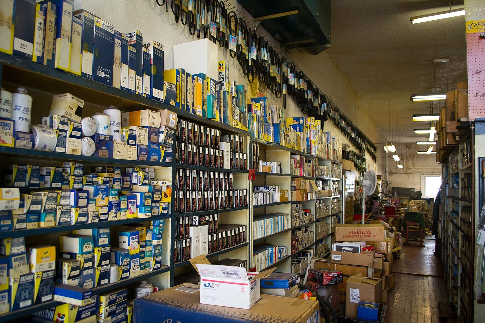

Discover Trusted Spare Parts Vendors at ASH Spare Parts Market
Explore a diverse network of spare parts shops, discover automotive components and connect with vendors through one organized market directory.
Presented under the guidance of Dr. Nadeem Nazir.

About ASH Spare Parts Market
ASH Spare Parts Market brings spare-parts vendors together in one organised digital directory, so visitors can discover shops and explore the automotive components they stock — without walking every lane of the market first.
This website lists the shops of the market in a single, consistent format: shop name, address, city, business type, main parts and contact details where supplied. A visitor can search by shop name or by the part they need, narrow the list by category, specialization or city, and then contact the shop directly.
The project is presented by Dr. Nadeem Nazir & Associates, as a digital initiative under the guidance of Dr. Nadeem Nazir — to give the market's vendors a professional digital representation and to make the market easier for visitors to explore.
- Market introduction: one directory for the spare-parts shops of ASH Spare Parts Market.
- Project vision: organised, searchable market information that is open to every visitor.
- Vendor discovery: find shops by name, parts, category, specialization or city.
- Organised spare-parts information: components grouped into clear categories, with no prices and no shopping cart — this is a directory, not a store.

Dr. Nadeem Nazir
Project presented by Dr. Nadeem Nazir & Associates.
Digital initiative under the guidance of Dr. Nadeem Nazir.
Frequently Asked Questions
N&N International @ ASH Spare Parts (N&Ninternational@ashspareparts) is a vendor directory and market showcase website for ASH Spare Parts Market. It lists spare-parts shops and vendors in one organised directory, with a spare-parts catalog, articles and contact information. It is not an online shop: nothing is sold through this website.
ASH Spare Parts Market is the spare-parts market whose vendors this directory brings together. The directory covers shops in Faisalabad, Lahore, Multan and Gujranwala, as supplied in the vendor data. No history, establishment date, official partnerships or achievements for the market are stated on this website, because none were supplied.
Go to the Vendors section and use the search box to look for a shop by name or by the part you need. You can also filter by category, specialization or city, sort alphabetically, and open any card's “View Details” button to see the full information supplied for that shop.
Yes. The Spare Parts section lists ten categories — Engine Parts, Suspension Parts, Brake Components, Electrical Components, Filters, Clutch & Transmission, Body Parts, Cooling System, Steering Components and Automotive Accessories. Choosing “Explore Category” on a category shows the vendors whose supplied parts match that category.
Each vendor card shows the contact details supplied for that shop. Where a phone number is listed, tap it to call; where a WhatsApp number is listed, use the WhatsApp button. Some shops have no phone number supplied — in that case only the address and main parts are shown. Before travelling, it is worth calling ahead to confirm the part is in stock.
No listing process, fee or approval step was supplied for this directory, so none is stated here. If you would like your shop to be considered for listing, please use the Contact Us section to get in touch and include your shop name, address, city, main parts and contact details.
From the Blog
Practical guides to the spare-parts market and to exploring its vendors.
Contact Us
Questions about the directory, a correction to a listing, or a request to be considered for listing — send us a message using the form.
How messages work here. No directory email address was supplied and no email service is configured for this static website, so the form cannot send a message to an inbox by itself. When you submit the form, it prepares an email with your message already written and a blank recipient: you add the directory's email address in your own email app and send it from there. Nothing is sent automatically.